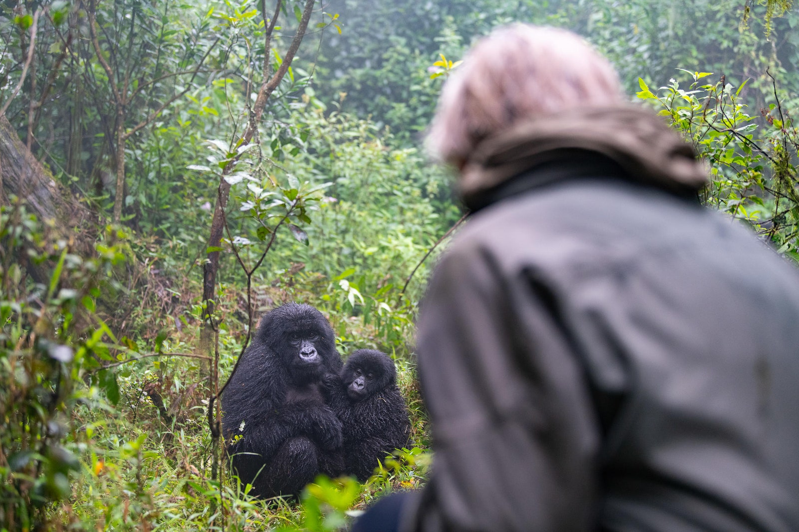
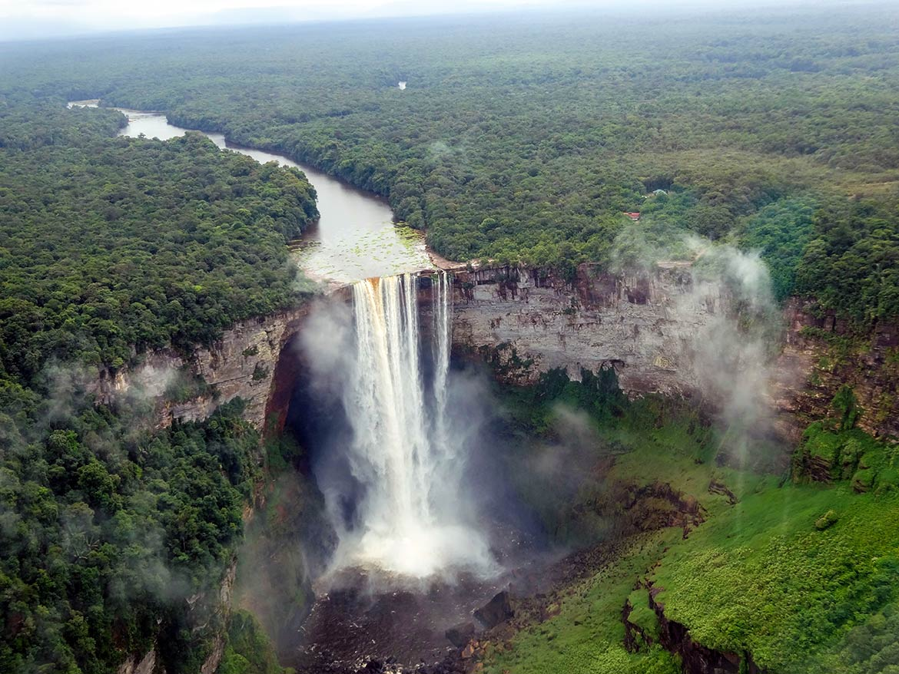
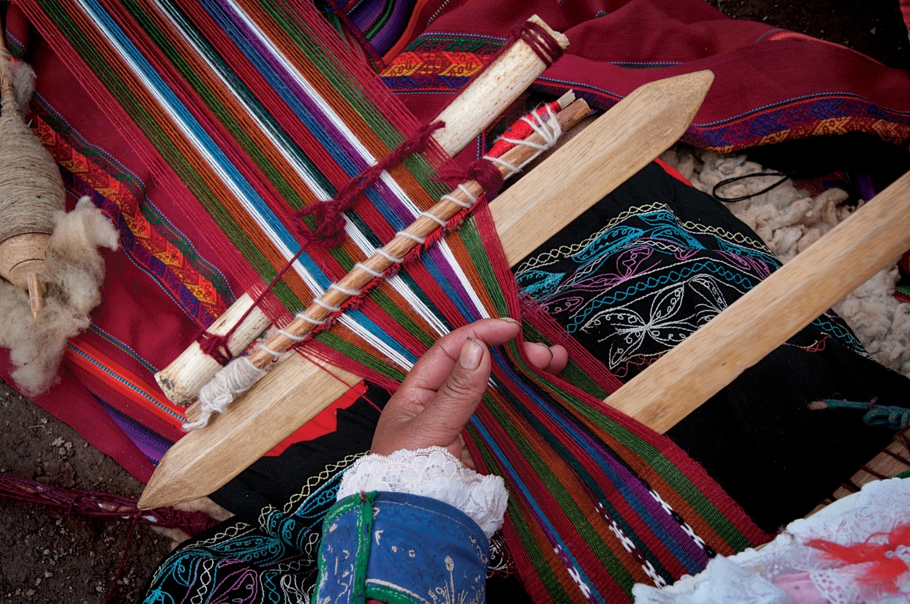
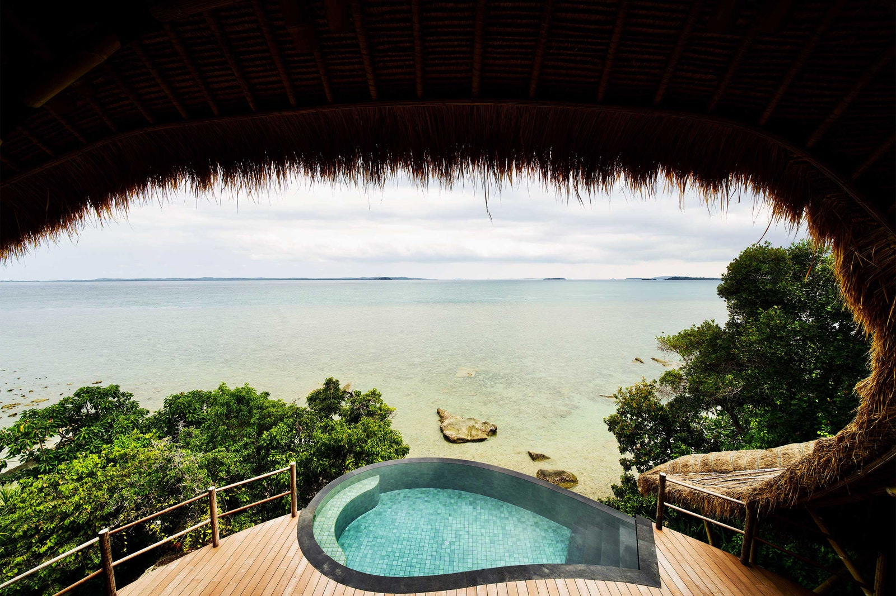
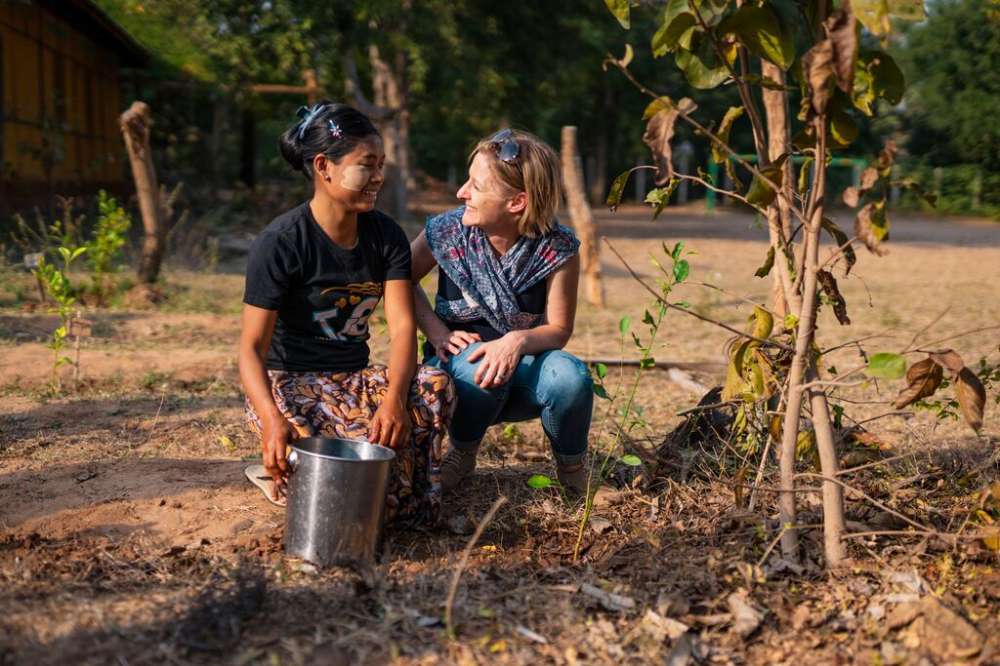

Community-based tourism focuses on experiences that are hosted by local residents in a way that does good for the whole area. It's not just a great idea for those we are visiting, either. Truth is, the reward for seeking out CBT (its sustainable-travel acronym) is that we get a deeper, more meaningful and textured insight into local cultures – with added positive impact from modelling the development of destinations in a way that’s more sustainable.
Sure, one of the greatest rewards of travel is experiencing dramatically different landscapes and terrains. But what a buzz if our immersive travel experiences also address the economic inequalities in our world, which are all the more exaggerated by the pandemic. We hear the word stakeholder used increasingly, but in this context of travel, it's vital to know that an Indigenous community has had input on the planning, hosting and financial compensation of activities involving them. Sitting in an all-inclusive for a contrived scenario created for fleeting artificial performances for foreigners can't be compared to connecting with locals in their own environs. Community-based tourism is unmistakably more respectful. Sign up for excursions with social enterprises or turn to ethical operators who have planned trips in this way to treat travellers to a truer taste of far-flung cultures, while benefitting those who live in more remote destinations.
 Gorilla tracking in RwandaRwanda’s first community-owned lodge, Sabyinyo Silverback Lodge in the foothills of the Virungas, isn't only helping the preservation of the famous mountain gorilla – it also helps give an income to thousands of households. Owned by community trust SACOLA, this chic Governors’ Camp Collection property uses gorilla tourism to support many social and conservation initiatives in the Kinigi area of north-western Rwanda. governorscamp.com
 Kaieteur Falls in GuyanaSurama, a village in the North Rupununi region of English-speaking Guyana, formerly British Guiana, was one of the first villages in the country to embrace community-led tourism. Journey Latin America takes you to this Caribbean coastline in a way that supports the preservation of these Amerindian ancestral lands and their biodiversity. The 14-day Guyana Wildlife: South America’s Wild Frontier tour takes you to the Pakaraima Mountains and Burro Burro River and lets you have a spell in a back-to-basics eco-lodge created using traditional Makushi craftsmanship. Head out on hikes and river-canoeing adventures knowing that your holiday is giving back. Staying in a simple thatched shack in a farming village may lack the polish and frills of luxury resorts, but such experiences make your escapes all the more enriching – you know that your time away is leaving cash in local pockets while you’re treated to authentic, soul-lifting encounters that promise the longest-lasting memories. journeylatinamerica.co.uk
 Traditional weaving in PeruPreserving ancient weaving traditions among the Ccaccaccollo community in Peru's Sacred Valley supports many Quechua-speaking families and provides precious protection for their traditional way of life. Even though this Andean enclave is close to Cuzco and Machu Picchu, few tourists came here in the past. Now, thanks to Planeterra, the non-profit partner of G Adventures, the project features in lots of the travel company’s small-group itineraries, drawing hundreds of travellers a year for a weaving demonstration and the chance to buy the handicrafts loomed in front of them by the artisans. Also thanks to this cooperative, the craftspeople are the first generation of women from these Indigenous people to be completely literate in Spanish. gadventures.com, planeterra.org
Cempedak and Nikoi are postcard-perfect private-island resorts in the South China Sea, just seven miles and five miles off the east coast of Bintan. They’ve developed a way of hosting guests at their characterful luxury nature-living resorts that directly benefits the Orang Suka Laut seafaring people of the Johore Strait, here in the Riau Archipelago. By heading out for an on-water excursion with these semi-nomadic Indigenous people – their name translates as ‘sea people’ – guests get a window into their lives of spearfishing and crafting fishing nets. This initiative has also helped convert the Orang Suka Laut from poachers to activists – instead of hunting endangered dugongs, they've become their protectors. Jaslan Button, who runs the resorts' watersports, succeeded in turning one of the last hunters into a guide. The government had been trying to achieve such goals in the area for a long time but hadn't been totally successful. While the hotel isn’t owned by the community as such, everyone who works there, except for a guest relations manager, is Indonesian. The savings and loans scheme has also helped members of the team to save and borrow at more favourable rates than those available from local banks, transforming their lives and futures. cempedak.com
This military-run South-east Asian country isn’t a destination to travel to at the moment and it has a bad reputation in terms of human rights and politics. But that doesn't make the poorest of the population in its least-developed regions any less deserving of help when tourism recovers. One of the best ways to help those in need will be to visit Myaing with Intrepid Travel. Amid off-grid farming villages characterised by maize and muddy oxen, the country’s first community-based tourism project was set up a few years before the pandemic hit. It’s only a two-hour drive from UNESCO-protected Bagan in the Mandalay Region, but life here, in contrast, was about growing sesame, sunflower and pigeon pea crops. It’s a hard way to earn a living, and many young residents head to the cities in search of jobs. Now, thanks to Intrepid’s partnership with ActionAid Myanmar, communities in SuLae Pan, Inn Yaung and KanGyi Taw are looking forward to hosting visitors again in charming, rustic lodges. intrepidtravel.com